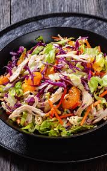
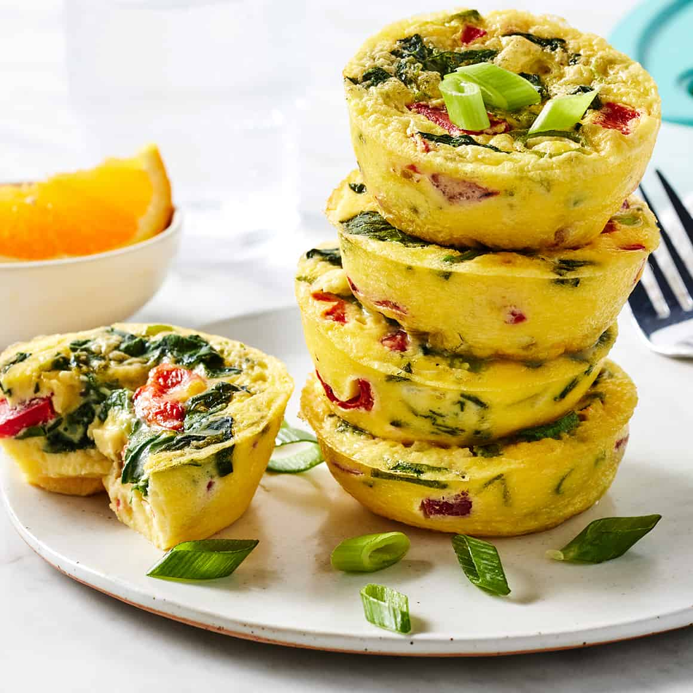
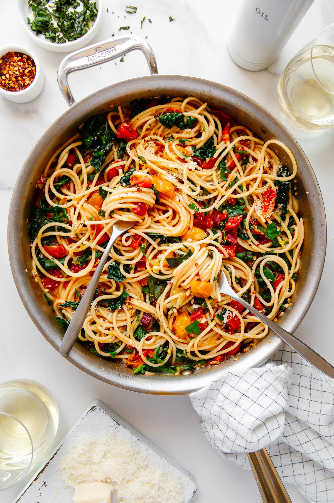
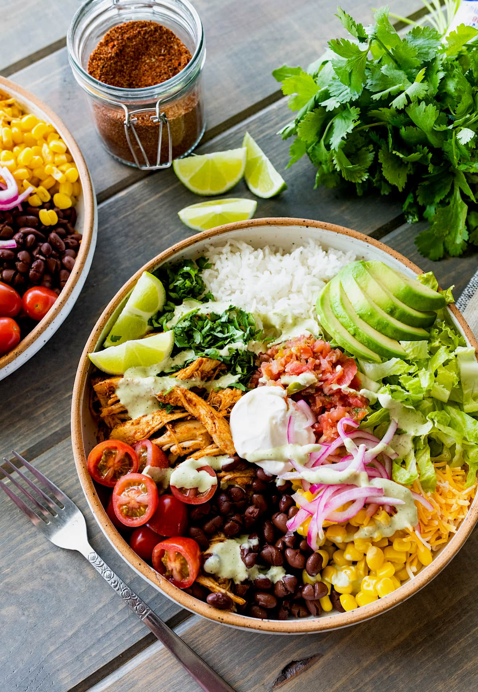

Easy & Healthy Recipes

Zucchini Patties
A healthy and affordable recipe made with shredded zucchini, eggs, and breadcrumbs. These crispy patties are easy to make and perfect for lunch or dinner.
Ingredients
- 2 medium zucchini
- 1 egg
- 1/2 cup breadcrumbs
- 1/4 cup grated parmesan cheese
- 1 clove garlic (minced)
- Salt and pepper to taste
- 1 tablespoon olive oil
Instructions
- Grate the zucchini using a box grater.
- Place the grated zucchini in a towel and squeeze out excess water.
- In a bowl, mix zucchini, egg, breadcrumbs, parmesan, garlic, salt, and pepper.
- Form the mixture into small patties.
- Heat olive oil in a pan over medium heat.
- Cook patties for 3–4 minutes on each side until golden brown.
- Serve warm with a salad or yogurt dip.

Chinese Chicken Salad
A fresh and crunchy salad made with shredded chicken, cabbage, and a light sesame dressing.
Ingredients
- 2 cups shredded chicken
- 3 cups cabbage or coleslaw mix
- 1 carrot (shredded)
- 2 tbsp sesame dressing
Instructions
- Add cabbage, carrot, and chicken to a bowl.
- Pour dressing over the salad.
- Toss until evenly mixed.
- Top with almonds and serve.
Beef Lettuce Wraps
A healthy low-carb meal with seasoned beef wrapped in crisp lettuce.
Ingredients
- 1 lb ground beef
- 2 cloves garlic
- 2 tbsp soy sauce
- 1 head lettuce
Instructions
- Cook ground beef in a pan.
- Add garlic and soy sauce.
- Cook for 2–3 minutes.
- Spoon beef into lettuce leaves.

Breakfast Egg Bites
Protein-packed egg muffins that are perfect for quick breakfasts.
Ingredients
- 6 eggs
- 1/4 cup milk
- 1/4 cottage cheese
- 1/2 cup chopped spinach
- 1/4 cup shredded cheese
- salt & pepper
Instructions
- Preheat oven to 350°F (175°C).
- In a bowl, whisk eggs, cottage cheese, and milk.
- Stir in spinach, cheese, salt, and pepper.
- Stir in spinach, cheese, salt, and pepper.
- Bake 18–20 minutes until eggs are set.

One Pot Pasta
A simple pasta dish where everything cooks in one pot for easy cleanup.
Ingredients
- 8oz pasta
- 2 cups vegetables or chicken broth
- 1 cup diced tomatoes
- 2 cloves garlic (minced)
- 1 tbsp olive oil
- 1/2 cup spinach
- parmesan cheese (optional)
Instructions
- Add pasta, broth, tomatoes, garlic, and olive oil to a pot.
- Bring to a boil over medium-high heat.
- Reduce heat and simmer for 10–12 minutes, stirring occasionally.
- Add spinach and cook for another 2 minutes.
- Top with parmesan cheese before serving.

Easy Burrito Bowl
A simple and filling bowl with rice, beans, vegetables, and protein.
Ingredients
- 1 cup cooked rice
- 1/2 cup black beans
- 1/2 cup corn
- 1/2 cup diced tomatoes
- 1/2 avocado (sliced)
- 1/2 cup cooked chicken or ground beef
- 2 tbsp salsa
Instructions
- Add cooked rice to the bottom of a bowl.
- Top with beans, corn, and tomatoes.
- Add chicken or ground beef.
- Place avocado slices on top.
- Drizzle salsa over the bowl.